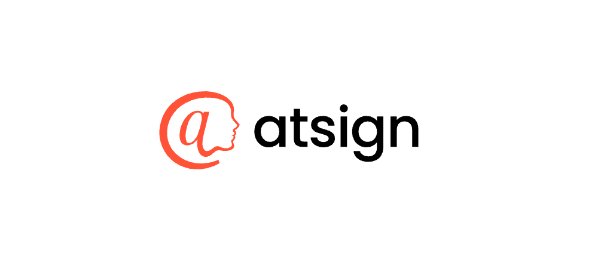
Software Engineer
June 2022 - PresentContracted Software Engineer at Atsign
Contracted software engineer at Atsign. Lead C/C++ Software Developer, Embedded Software Developer, DevOps Engineer, Student Ambassador, and Intern Recruiter/Mentor.
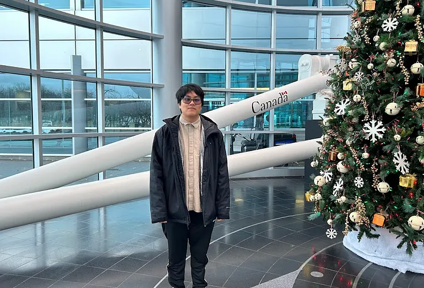
Canadian Space Agency Tour
December 17, 2024Longeuille, Quebec, Canada
Received a tour of the Canadian Space Agency in Longeuille Quebec, Canada
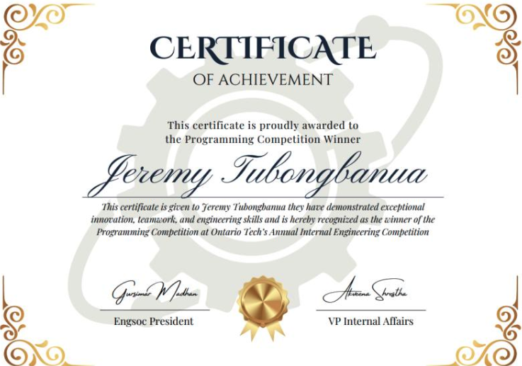
IEC 2024
November 3, 20241st Place in Programming
1st place in Ontario Tech University's Engineering Society's Internal Engineering Competition of 2024 in the Programming category
SecTor 2024
October 23-24, 2024Atsign representative at SecTor 2024
Represented Atsign at SecTor 2024, showcasing secure remote access to industry professionals.
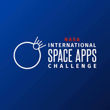
NASA Space Apps 2024
October 5-6, 20241st Place Overall and Global Nominee
1st Place Overall at NASA Space Apps 2024 and nominated as the Global Nominee hosted by Ontario Tech University's Faculty of Business and IT.
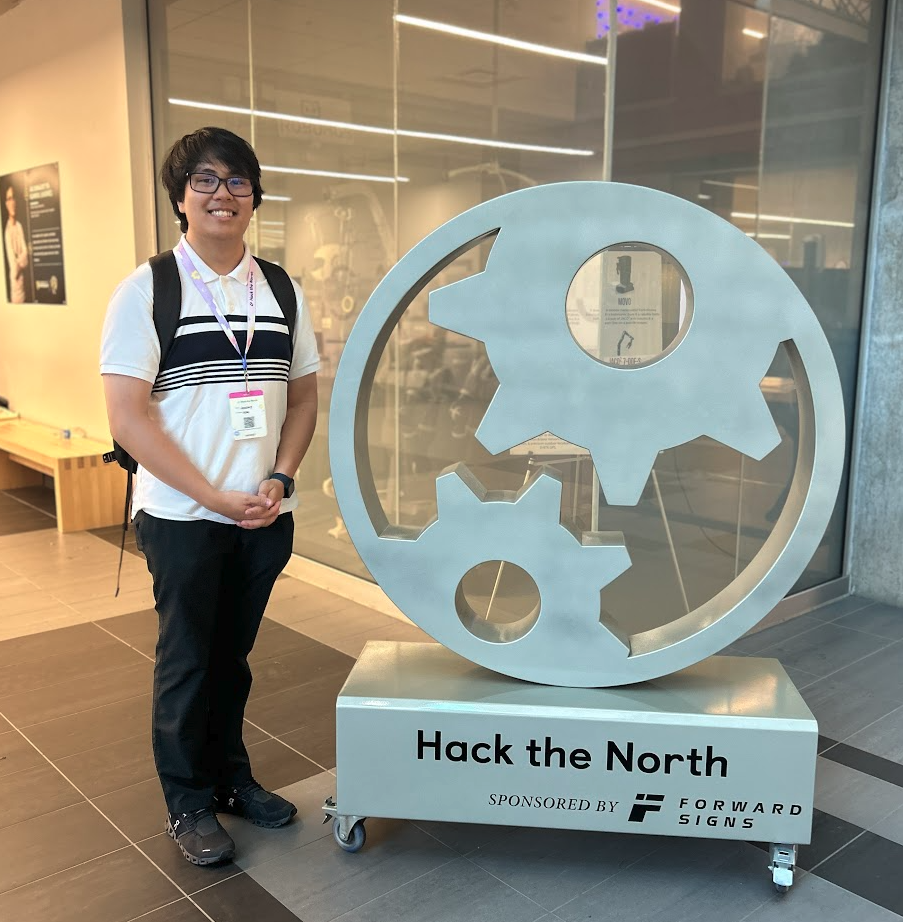
HackTheNorth 2024
September 13-15, 2024Canada's largest hackathon
Participated at Canada's largest hackathon, HackTheNorth, in 2024.
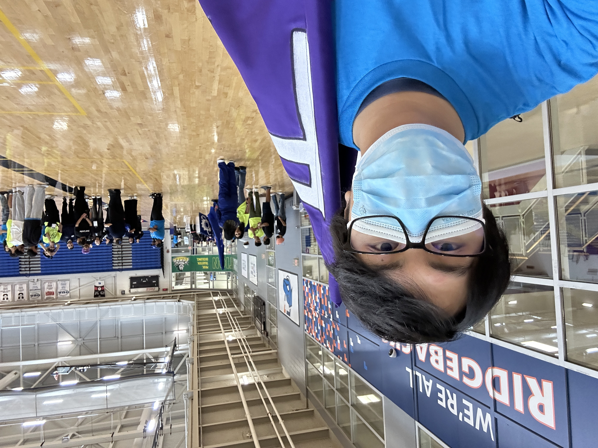
FEAS Orientation Volunteer
September 2, 2024Engineering orientation volunteer
Volunteered as an engineering station leader for engineering orientation, helping first-year students get acquainted with their programs and providing guidance during orientation activities.
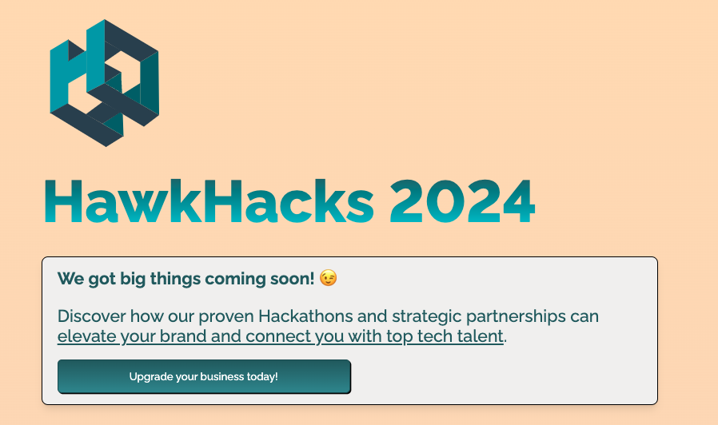
HawkHacks 2024
May 17-19, 2024Wilfrid Laurier University hackathon
Participated in HawkHacks Wilfrid Laurier University hackathon in 2024.
VP Communications
April 2023 - April 2024OTU CS Club
Responsible for internal and external communications, sponsorship hunting, and organizing career-building workshops and events. Spearheaded the acquisition of club funds and managed outreach efforts to engage members effectively.
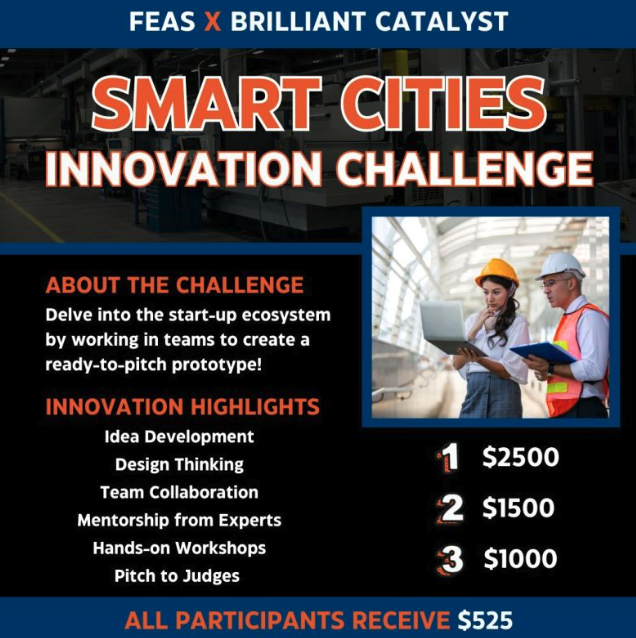
Smart Cities Finalists
March 1-29, 2024Top 6 finalists in Smart Cities 2024 competition
Selected as one of the top 6 finalists in the Smart Cities 2024 competition, receiving a $525 prize for participation.

Innovation Project Provincial Judge
January 21, 2024Provincials Judge for FLL Ontario East Provincials
Judged the Innovation Project category at the FLL Ontario East Provincials held at Durham College, assessing teams on creativity, problem-solving, and project design.
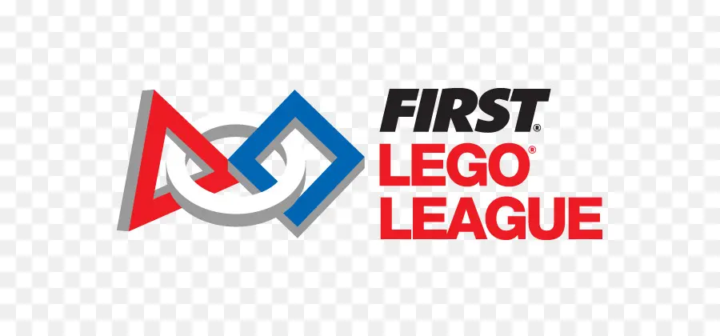
Core Values Provincial Judge
January 20, 2024Provincials Judge for FLL Ontario West Provincials
Judged the Core Values category at the FLL Ontario West Provincials held at Durham College, evaluating teams on teamwork, respect, and professionalism.
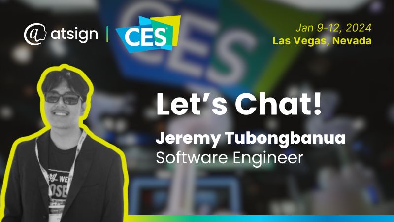
CES 2024
January 9-12, 2024Atsign representative at CES 2024
Represented Atsign at CES 2024, showcasing a joint partnership demo with Qt that highlighted cutting-edge IoT solutions. Engaged with industry professionals and demonstrated the potential of encrypted device communication in a high-profile setting.

Judge Advisor
December 2, 2023Judge Advisor for Mary Ward FLL Qualifier
Led the judging team for the Mary Ward FLL Qualifier, managing the event and providing feedback to participants.
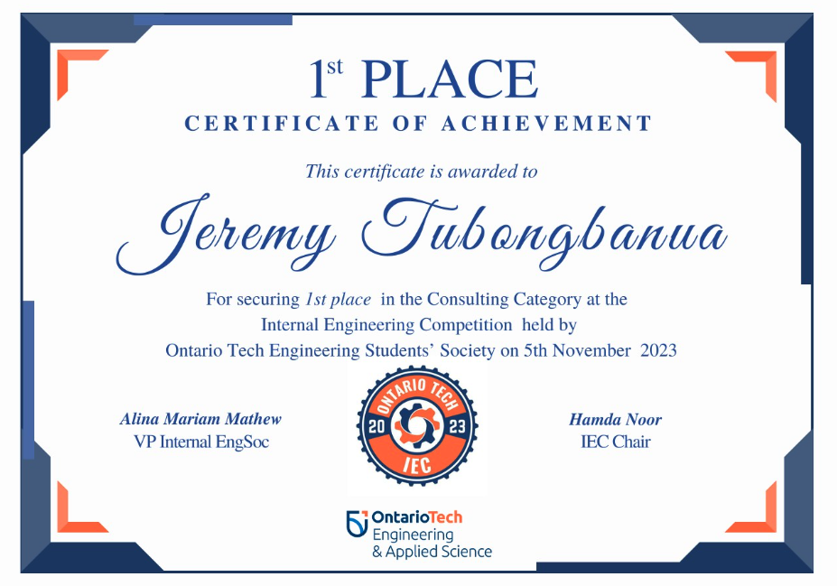
1st Place IEC Consulting
November 5, 20231st place
1st Place in Internal Engineering Competition in the Consulting Category, hosted by EngSoc.
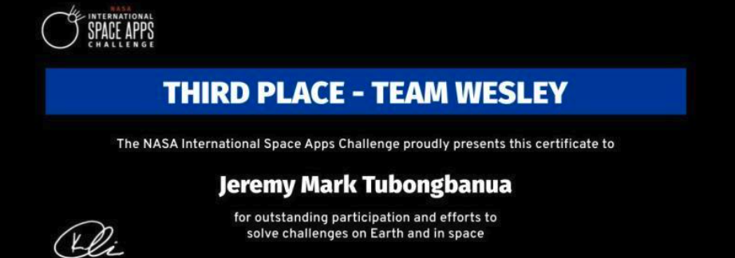
NASA Space Apps Hackathon 2023 Oshawa
October 7-8 20233rd Place & People's Choice Award
Placed 3rd and received the People's Choice Award at NASA Space Apps Hackathon 2023 Oshawa.
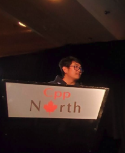
Cpp North Lightning Talk & Volunteer
July 15-17, 2023Presented my own lightning talk on my experiences with carpal tunnel syndrome
I delivered a lightning talk at Cpp North 2023, sharing my personal experiences dealing with carpal tunnel syndrome, and I volunteered at the conference, assisting attendees and event organizers.
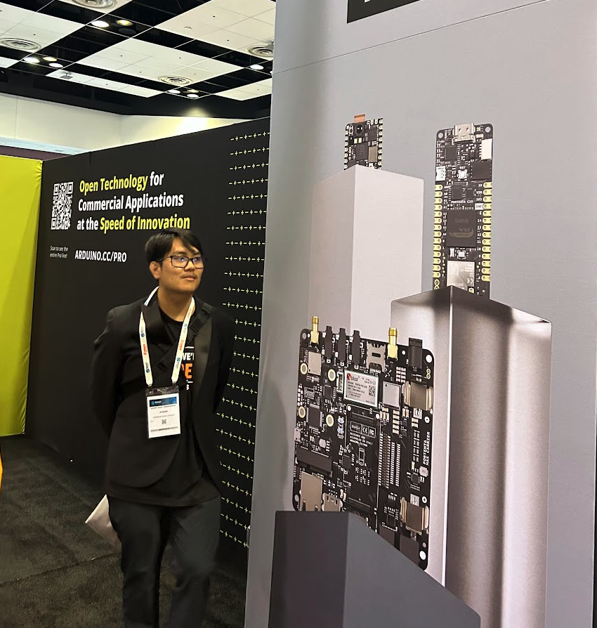
Sensors Converge 2023
June 19-21, 2023Atsign representative at Sensors Converge 2023 in San Francisco
Represented Atsign at Sensors Converge 2023 in San Francisco, showcasing secure IoT edge communication to industry professionals.
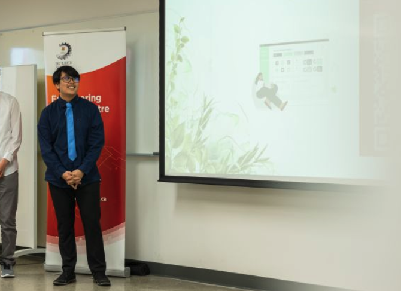
Schulich Hacks 2023, Calgary, Alberta
April 27-29, 20232nd Place & Best UI/UX
Placed 2nd overall and received the best UI/UX award at Schulich Hacks 2023 in Calgary, Alberta (in-person).
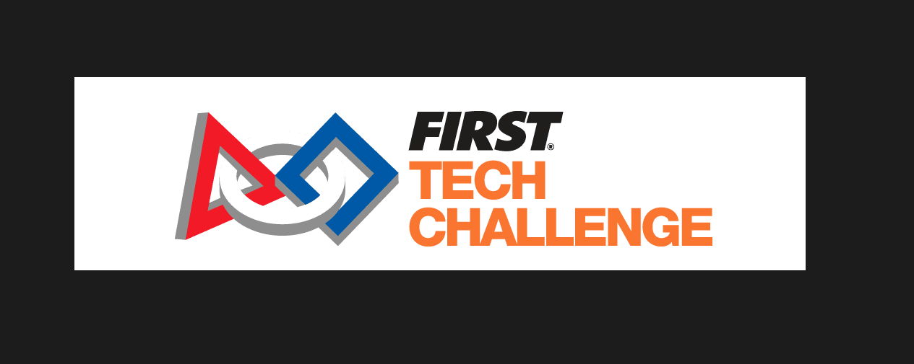
Provincial Judge
February 26, 2023Provincial Level Judge for FTC at Centennial College
Served as a judge at the provincial level for the FIRST Tech Challenge (FTC), evaluating team presentations, designs, and technical solutions at Centennial College.

Core Values Provincials Judge
January 14, 2023Provincials Judge for FLL Ontario East Provincials
Judged the Core Values category at the FLL Ontario East Provincials held at Durham College, evaluating teams on teamwork, respect, and professionalism.

Core Values Provincial Judge
January 13, 2023Provincials Judge for FLL Ontario West Provincials
Judged the Core Values category at the FLL Ontario West Provincials held at Durham College, evaluating teams on teamwork, respect, and professionalism.

Judge Advisor
November 26, 2022Judge Advisor for Mary Ward FLL Qualifier
Led the judging team for the Mary Ward FLL Qualifier, managing the event and providing feedback to participants.

Team Escort
December 1, 2019Team Escort for Mary Ward FLL Qualifier
Assisted teams during the Mary Ward FLL Qualifier by ensuring they arrived at their judging and competition rounds on time and providing support as needed.

Referee
December 1, 2018Referee for Mary Ward FLL Qualifier
Oversaw and enforced rules during robot game matches at the Mary Ward FLL Qualifier, ensuring fair play and accurate scoring for all teams.
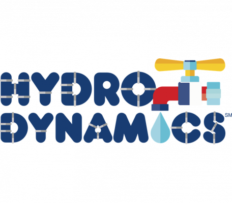
Referee
December 2, 2017Referee for Mary Ward FLL Qualifier
Oversaw and enforced rules during robot game matches at the Mary Ward FLL Qualifier, ensuring fair play and accurate scoring for all teams.
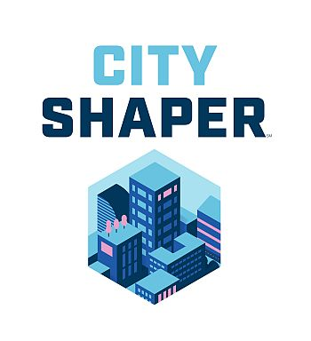
Mentor/Coach
September 2017 - June 2017FLL Mentor for Holy Spirit Catholic School Team
Guided students through the FIRST LEGO League (FLL) program, helping them develop programming, engineering, and teamwork skills. Assisted in preparing the team for competitions and provided ongoing mentorship and technical support.
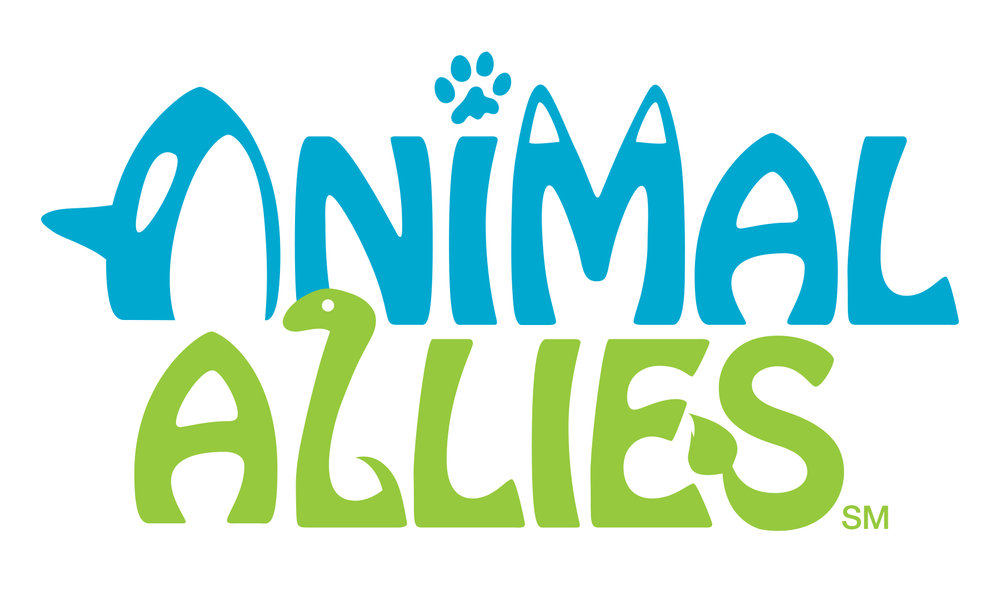
Referee
December 3, 2016Referee for Mary Ward FLL Qualifier
Oversaw and enforced rules during robot game matches at the Mary Ward FLL Qualifier, ensuring fair play and accurate scoring for all teams.